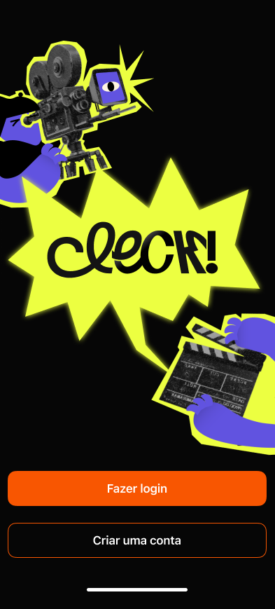
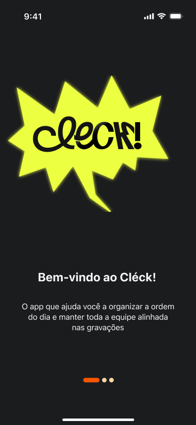
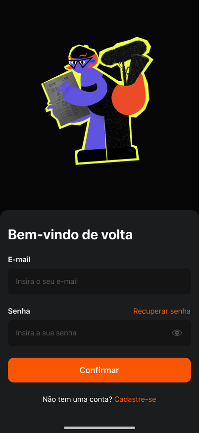
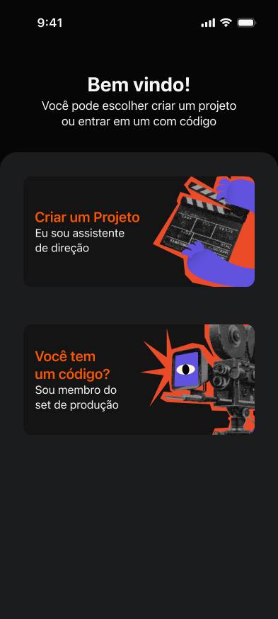
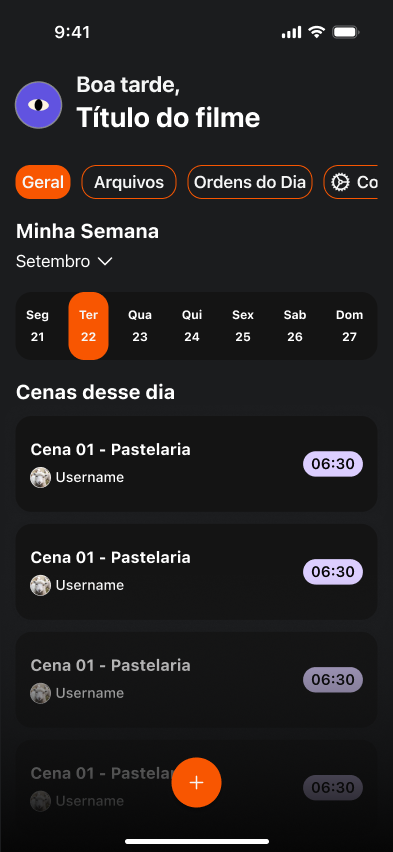
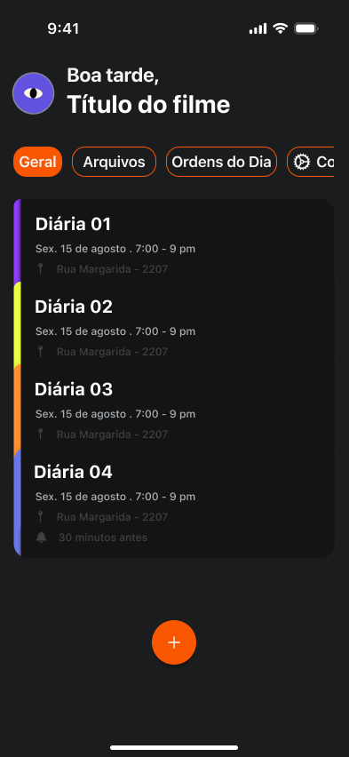
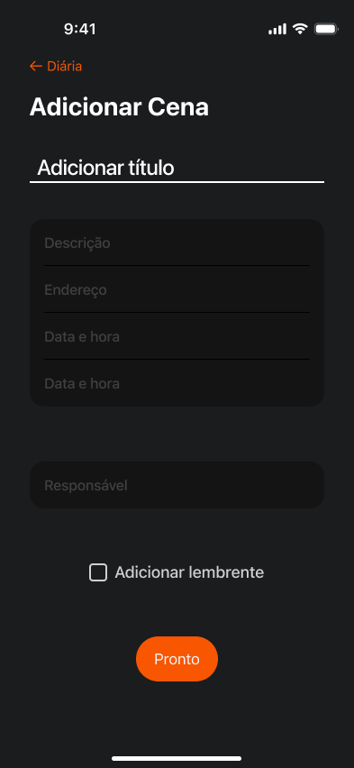
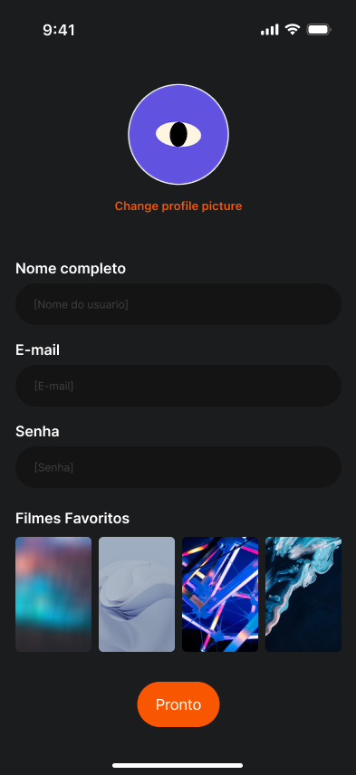

The problem
Without clear communication and organization processes, film crews lose alignment. That leads to repeated delays, piled-up tasks and wasted resources, which affect both the quality of the production and its completion.
An iOS app that helps assistant directors organize shooting schedules and keep the whole film crew on the same page.

On a film set, assistant directors (ADs) connect the director, the cast and every department. One of their main jobs is creating the call sheet: the document that says what will be shot each day, in what order, and when the crew arrives, breaks and wraps.
Scenes are rarely shot in script order, so this schedule is constantly being organized and reorganized. Cleck! brings schedules, call sheets and team communication into one app. We built it as a team, using the Challenge Based Learning framework.
Without clear communication and organization processes, film crews lose alignment. That leads to repeated delays, piled-up tasks and wasted resources, which affect both the quality of the production and its completion.
Help ADs coordinate production in one place, making the process faster, more visual and less dependent on last-minute improvisation.
We finished every must-have feature, even after drastically reducing the scope, and the call sheet turned out the way we wanted. Several people working in the field found the project useful and important.
We plan to publish the app on the App Store and bring back features cut for scope: multiple projects, light mode and a checklist of what each shooting day needs.









I got a much better understanding of how to work with components and color variables.
We started out designing for screenwriters. Listening to people in the field pointed us to a more relevant problem and a different user.
Cutting features early is what let us finish the essentials. If the scope feels just right, it is probably still too big.